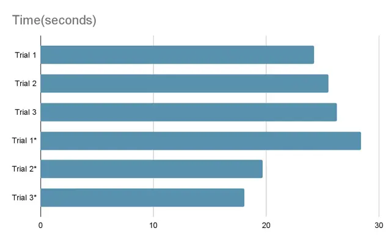
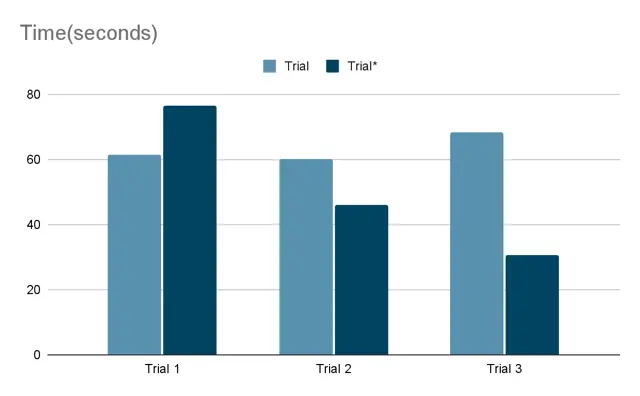

SEAPERCH
Project Goal
Designed and built a SEAPERCH underwater remotely operated vehicle (ROV). As Team AQUADUCKS, we built a PVC-frame ROV for the SeaPerch obstacle and mission courses and documented it in a technical design report.
TODO: Replace this placeholder with details about your SEAPERCH build — materials used, thrusters, control system, competition results, and lessons learned.
What I Built
A working ROV with a custom 3D-printed hook for grabbing objects. Cutting away excess frame to reduce drag brought our average obstacle-course time from about 25.4 s to 22.1 s.
Photos & Visuals




Build Process
- Plan — defined requirements and constraints for the project.
- Design — sketched, modeled, or simulated the solution before building.
- Build — fabricated, assembled, or implemented the design.
- Test & Refine — evaluated results and iterated on the design.
TODO: Replace the generic steps above with the specific steps you took on this project, and add photos of each stage.
Key Problem Solved
At first the ROV could not lift anything. We flipped the vertical-thrust motor, removed weight, and rearranged the pool-noodle floats to fix buoyancy, then iterated on the hook angle until it could reliably pick up objects.
Skills Gained
Buoyancy and weight balance, iterative design and testing, soldering repairs, and how much clear team communication matters.